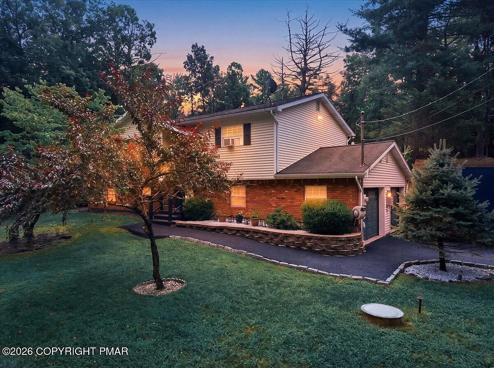
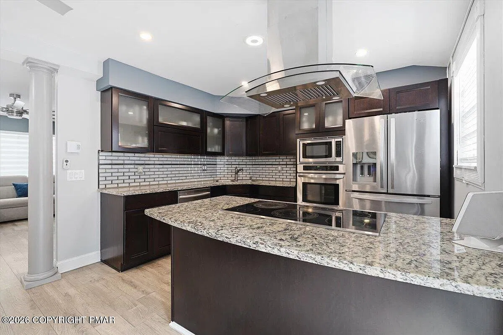
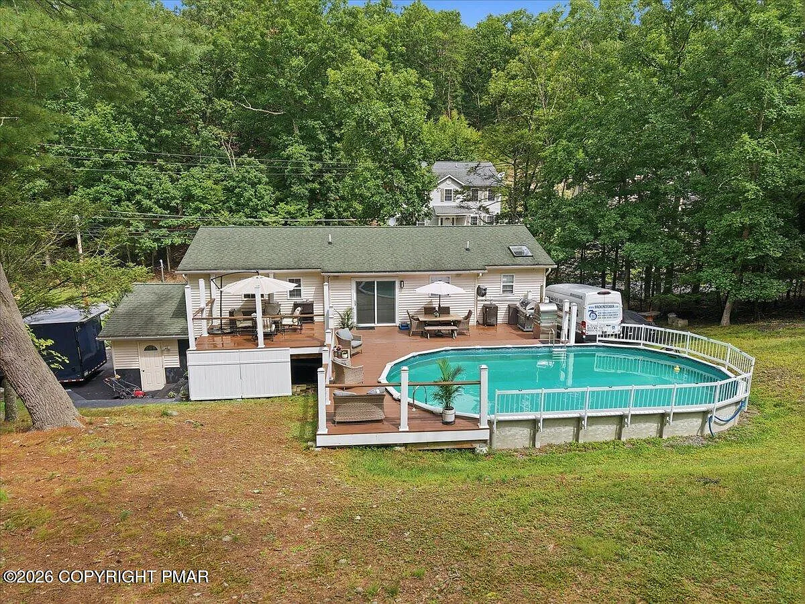

The weather
Middle Smithfield on the loop.
Mount Holly radar. The Poconos sit on this station. A showing is better when you can see what is coming over the ridge.
Live Storm Radar · Monroe County
Station KDIX

East Stroudsburg · 18302
$449,999
The setting
Private corner lot in Lake of the Pines. In-ground pool. Wrap-around rear deck. Mature trees. Community lake, beach, clubhouse, and courts — and short-term rentals now permitted.

The house
Chef’s kitchen with granite, center island, stainless appliances, and pantry. Lower level finished with family room, wet bar, and a speakeasy-style bonus room — complete with a motion-sensor hidden door behind the bookcase. Attached two-car garage and a large detached shed.

Already in place

The place
East Stroudsburg Area schools. A quiet mountain enclave with its own private lake, beach, outdoor pool, basketball and tennis courts, and playground. Close to shopping, golf, skiing, and the Gap.
Before you become a local
There’s more to moving than square footage. Here is what to know about the ground under 2434 Woodcrest Drive.
Geography
Postal address says East Stroudsburg. The ground sits in Middle Smithfield Township—established 1794, decades before Monroe County itself was formed.
Commuter Lore
In 1854, local landowner Robert Brown deeded railroad right-of-way for exactly one dollar—on the condition that passenger trains always stopped here. The city link buyers still rely on started with that deal.
Mountain Living Tip
Your own private backyard pool for quiet days. The community lake, beach, and club when you want to host. Short-term rentals are now permitted in the community.
The weather
Mount Holly radar. The Poconos sit on this station. A showing is better when you can see what is coming over the ridge.
Olivia M. Cipollo, RE/MAX Crossroads. 815 Seven Bridge Road, East Stroudsburg.
Call 570-424-88502434 Woodcrest Drive · East Stroudsburg · Middle Smithfield Township · MLS PM-145195 · Listed by Olivia M. Cipollo, RE/MAX Crossroads. Concept page only — not an official brokerage campaign. Listing photos and rights remain with the listing office. Verified active at $449,999 as of October 8, 2026. Final public use controlled by the listing broker.